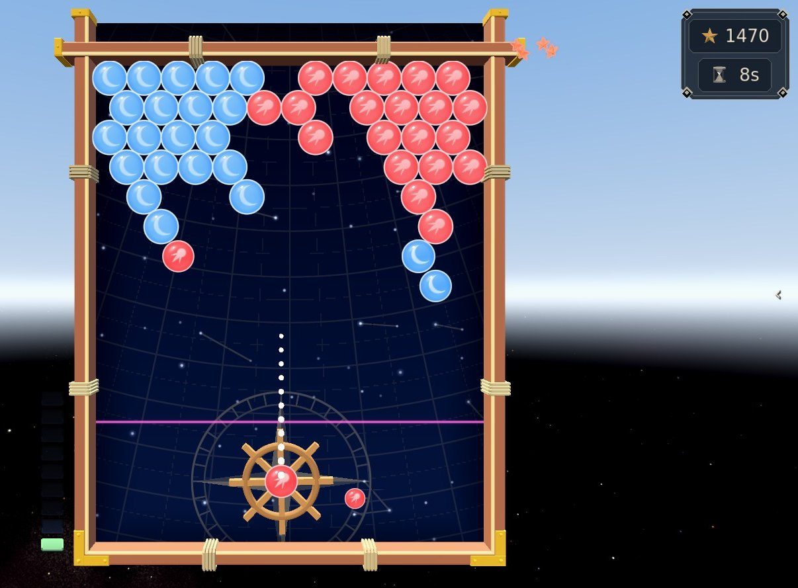
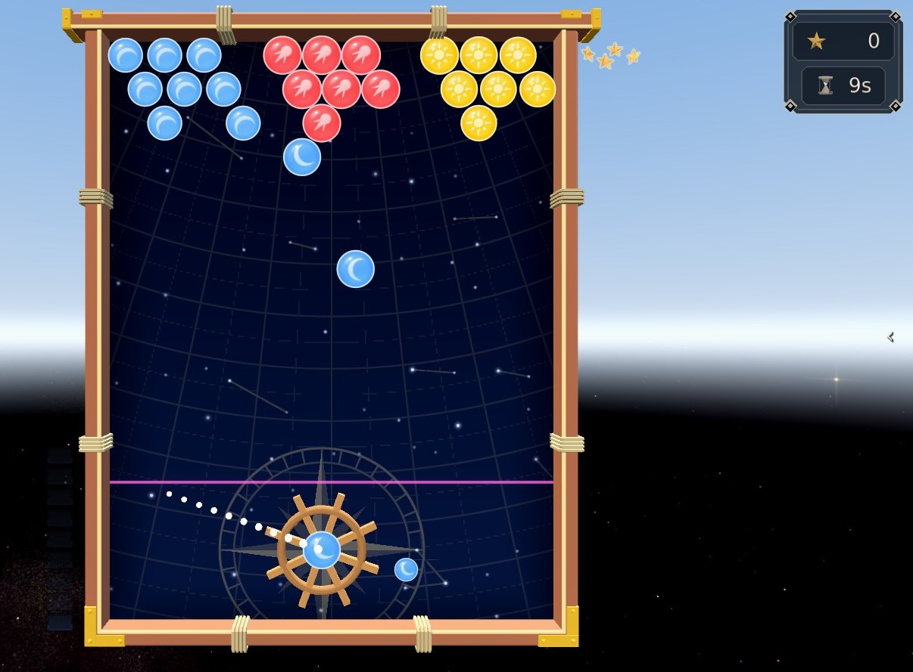
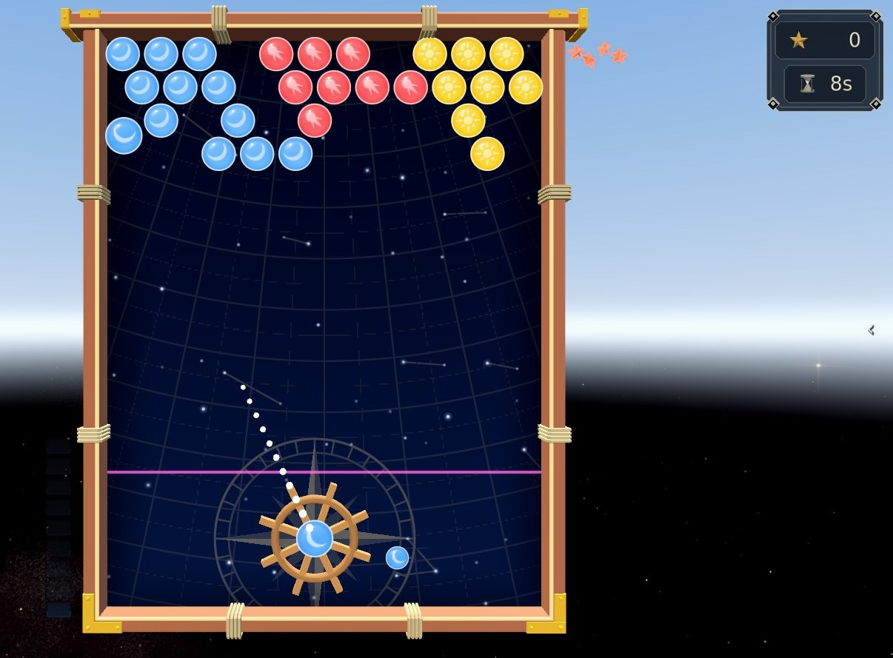
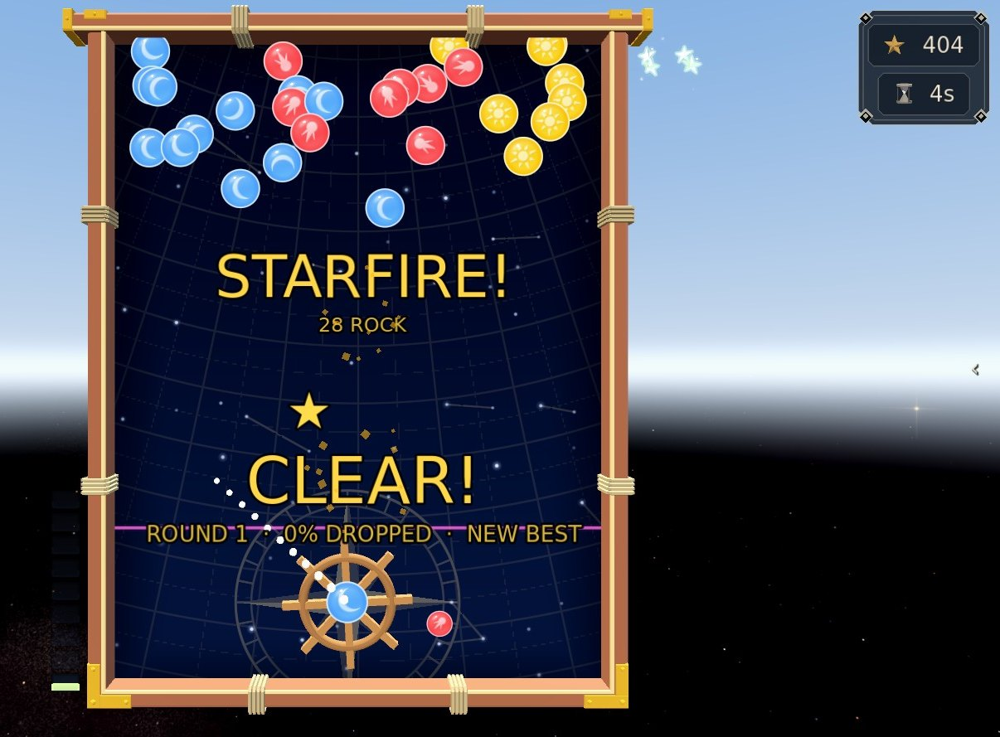
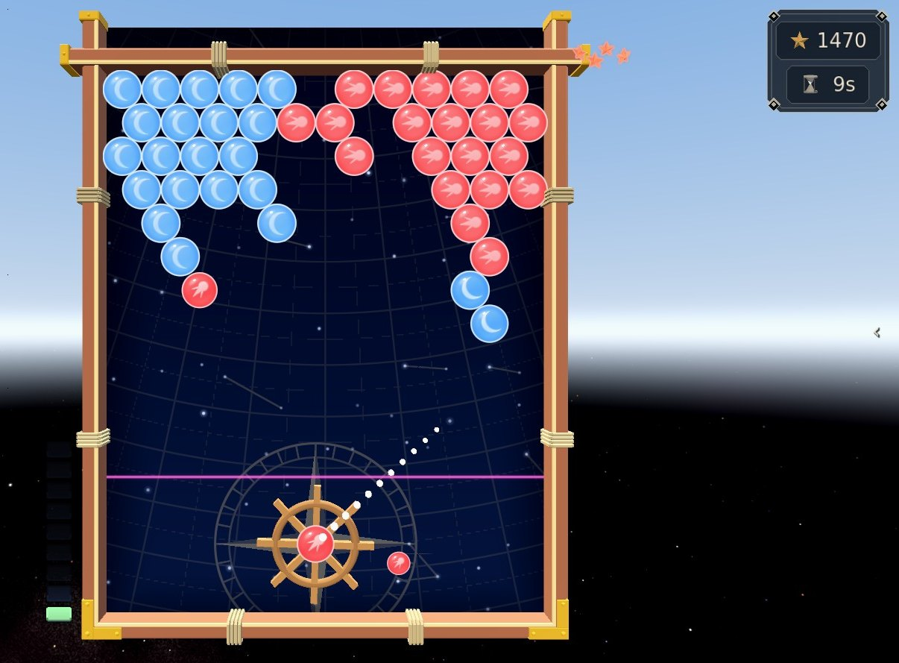

Navigation
Turn the ship's wheel to shoot drift-rock into the field above. Break three of a colour, and whatever is left hanging falls.
Step by step
-

1The wheel2Next3Your aim1The wheel2Next3Your aim Step 1Turn the wheel
You're at the wheel. Turn it with A and D, the D-pad, or just point, and the dotted line shows where the shot will go. The small rock beside the wheel is the one loaded next.
-

1Fired1Fired Step 2Fire into the field
Fire with Space, and a shot can bounce off the side rails. Three of a colour touching breaks them, and anything left hanging with nothing above it falls, which is worth far more than the three you broke.
-

1Held rock, waiting1Held rock, waiting Step 3Hold your fire
Hold your fire (Shift) and the wheel winds up: that shot banks its group instead of breaking it, and the held rock sits there glowing and breathing together. Break anything touching a bank and the whole run goes off at once, with a blast that takes the rock around it. Bigger run, bigger blast.
-

1One run, 28 rock2Score1One run, 28 rock2Score Step 4Set it all off
Here three held groups went off together: 28 rock in one blast, the field cleared, and Starfire! called over it. The more groups in the run, the bigger the call.
-

1The clock2The danger line1The clock2The danger line Step 5Watch the clock
The sky comes down a row on a clock (the seconds in the corner count down to it), and sooner as the colours run out. Let the rock reach the danger line and you have booched. At sea she turns about and re-sails the leg, which costs you course, never your hull; ashore the round is dealt again, and the third booch ends the watch.
The rules, as the game tells them
You are at the wheel. Turn it to lay the shot over, and send drift-rock into the field above.
Three of a colour touching breaks them — and anything left hanging with nothing above it falls, which is worth far more than the three you broke.
HOLD YOUR FIRE and the wheel winds up: that shot BANKS its group instead of breaking it, and the held rock sits there glowing and breathing together. Break anything touching a bank and the whole run goes off at once, with a blast that takes the rock around it. Bigger run, bigger blast.
The sky comes down a row on a clock (the seconds beside the board count down to it), and sooner as the colours run out. Let the rock reach the bottom row and you have BOOCHED. At sea she turns about and re-sails the leg — it costs you course, never your hull. Ashore the round is dealt again, and the third booch ends the watch.
Turn the wheel: A / D, the D-pad, or just point.
Fire: Space.
Hold fire: Shift.
Word for word from the game: in play the same text sits behind the ? on the board, so this page cannot drift from it.